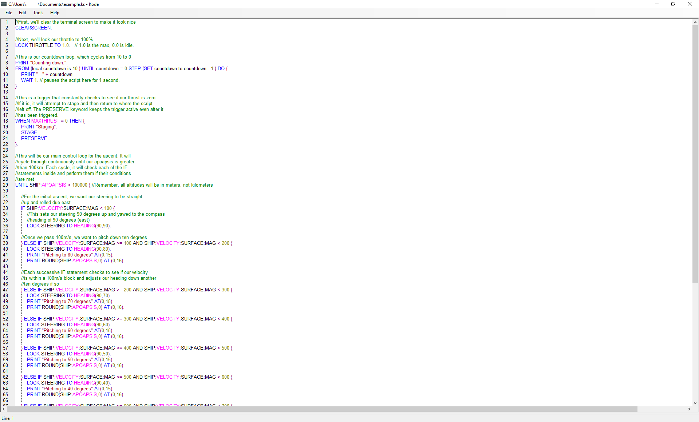

Welcome to Kode.
Kode is soon to be a fully featured IDE for the kOS scripting language in Kerbal Space Program. At the moment though its just a fancy text editor that colours your code :)
Whats coming?
- Intellisense
- Built in compiler and debugger
- Telnet controls that will allow you to control the game from inside the IDE
- Mac and Linux ports
- Tabbing and a File tree to allow for complex multi-filed programs
- Course visulisation so you can see what your rockets path will be like before you launch it(This wont happen for a long time)
- Among other things, I dont want to spoiler the surprise too much!
Features
Kode's first release(0.1) is not much more than notepad with Syntax highlighting, However in the File menu you can export a script straight to your scripts folder(Provided you fill in the KSP install location field in settings). Keep an eye open for updates as every update will bring in more features and improve on current ones. For now, I am aiming for an update every week.